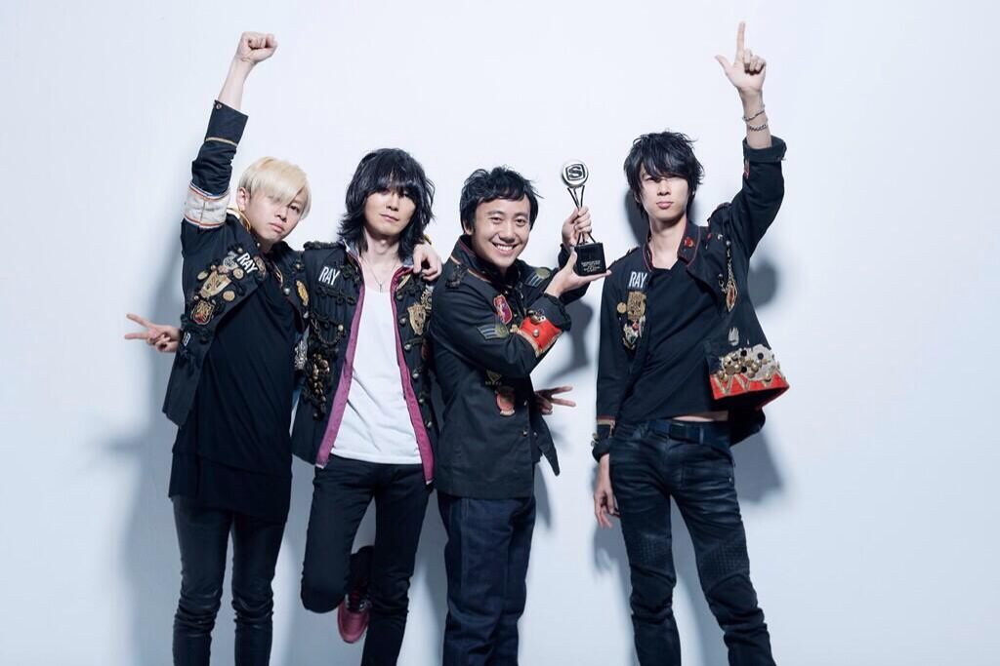
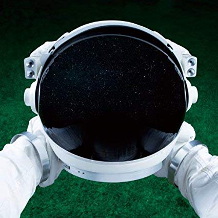
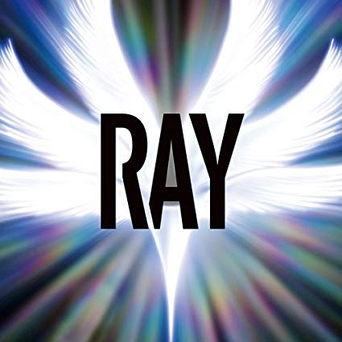
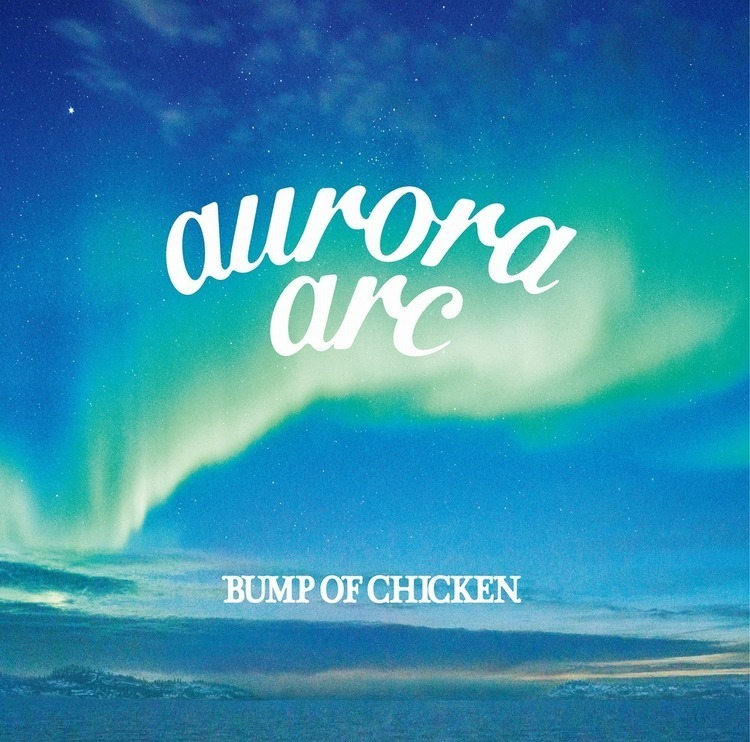

MY BEST
Music
Perfume
BUMP
OF
CHICKEN＜

BUMP OF CHICKEN
千葉県出身の4人組ロックバンド。2000年に1stシングル『ダイヤモンド』をリリースし、メジャーデビュー。2001年に発売された2ndシングル『天体観測』が大ヒットし、知名度が大きく上昇。

『COSMONAUT』
2010年発売の4thアルバム。前作から3年ぶりとなるスタジオアルバム。私が初めて手にしたアルバムでとても思い出に残ってる。収録曲の『魔法の手紙～君から君へ～』はNHKみんなのうたに起用された。ボーカル藤原基央の幼少期の自分に向けて書いた曲で将来への希望を唄う。

『RAY』
2014年発売の5thアルバム。2013年10月29日に開催されたツアー「WILLPOLIS」の日本武道館公演のステージ上でリリースが発表された。タイトルの『RAY』は英語で「光線」を指す。収録曲『RAY』はオリジナルとは別に初音ミクとのコラボレーションしたバージョンも発表され、BUMP OF CHICKENとしては初のフィーチャリング・アーティストとなる。

『aurora arc』
2019年発売の7thアルバム。収録曲14曲のうち11曲がタイアップ曲となっており、聞きなじみのある曲が多い。中でも『新世界』はロッテ操業70周年記念スペシャルアニメーション『ベイビーアイラブユーだぜ』のテーマソング。アニメーションのタイトルである『ベイビーアイラブユーだぜ』は歌詞の一部であるが、完成した楽曲を聴いたアニメ制作サイドが感銘を受け、このフレーズをタイトルに採用した。